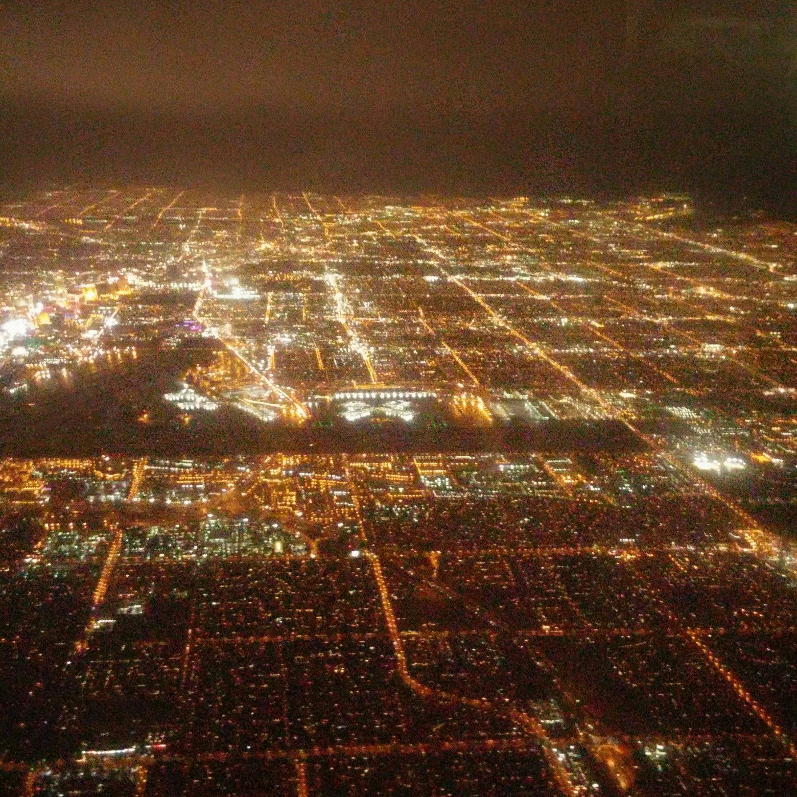
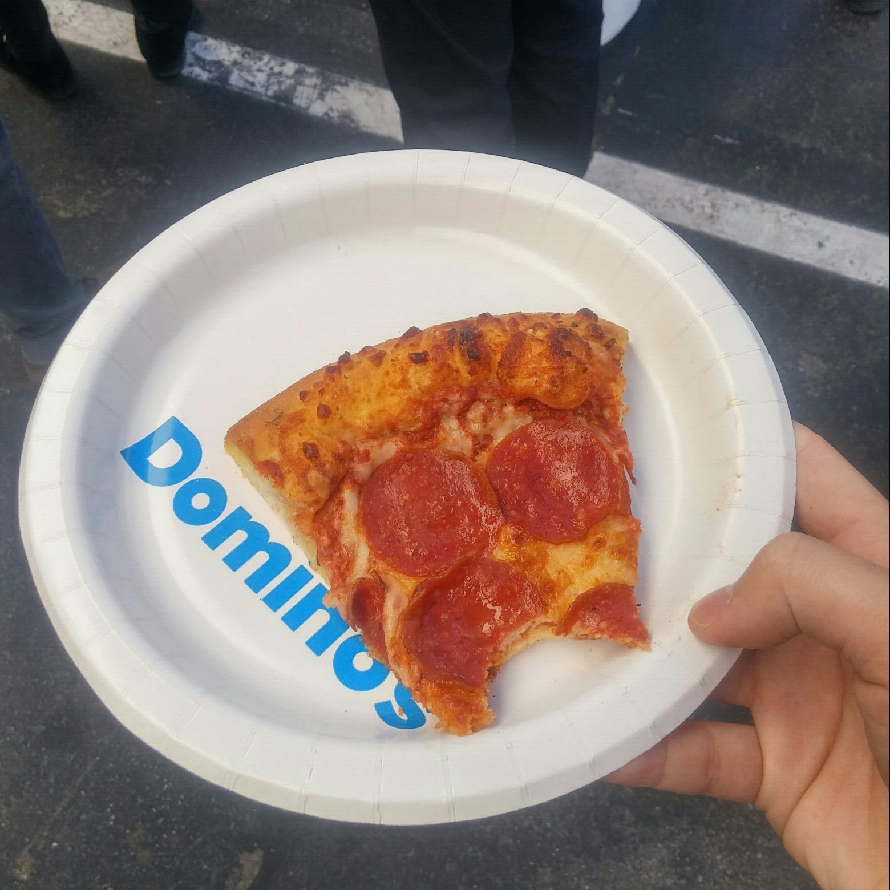
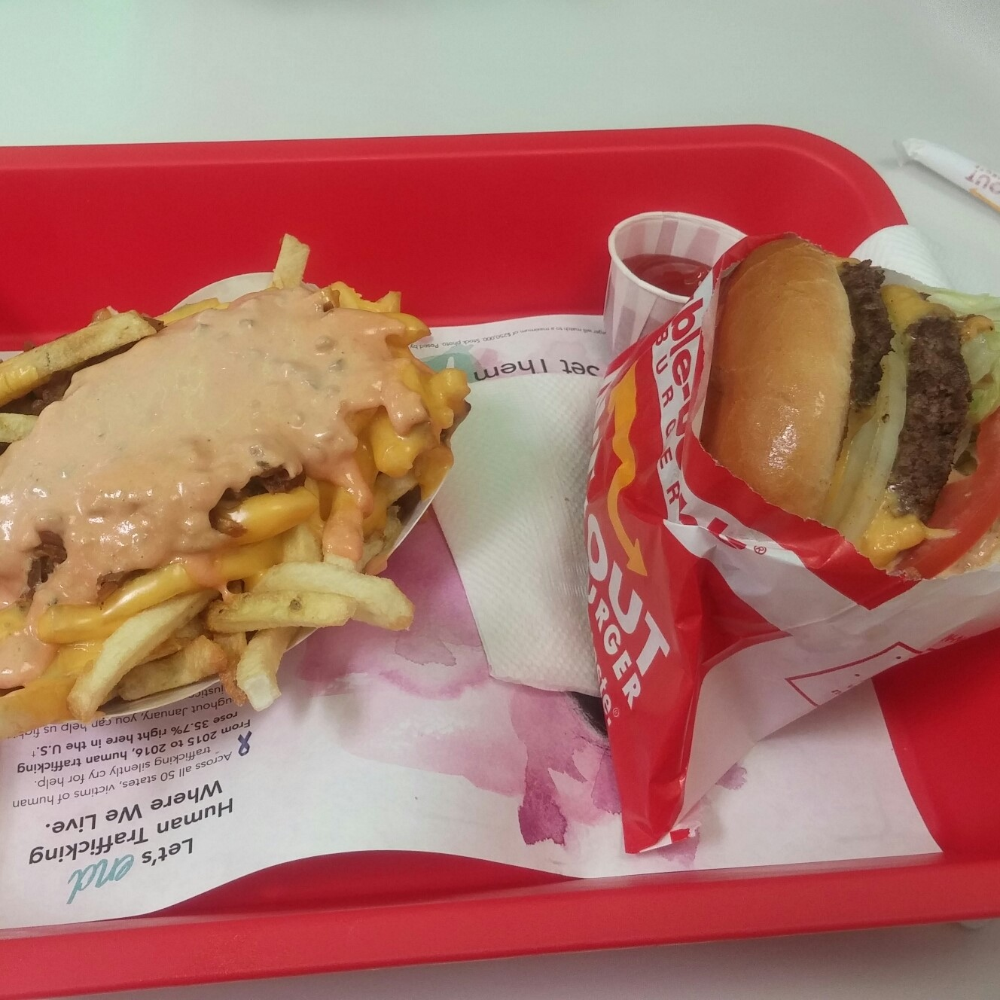
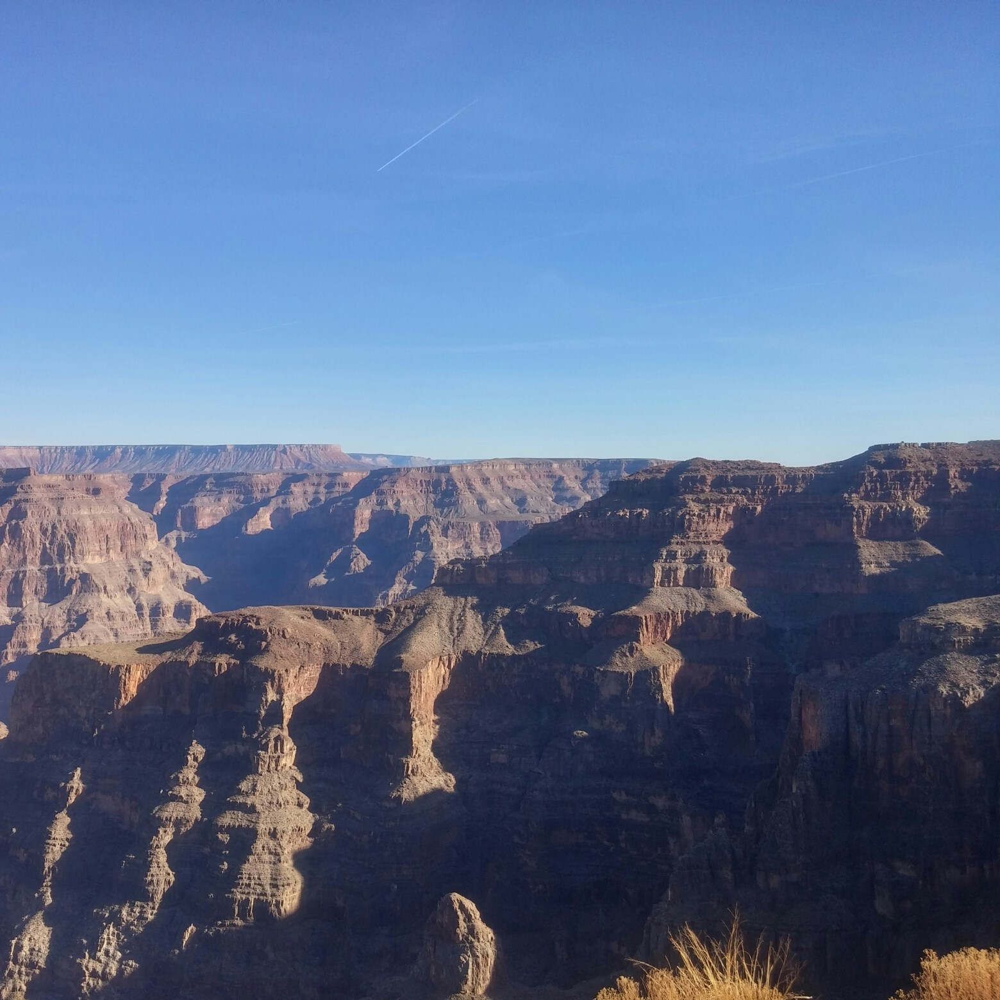

January, 20182018년 1월, CES. CES, 국제가전박람회는 매해 라스베이가스에서 열립니다. 현 시대 가장 최신기술을 여러 기업체들이 뽐내는 곳이며. 이과생들의 성지라고 불립니다. 사실 CES만 즐기면 라스베가스에 가는 이유가 없겠죠. 여러 카지노와 즐거운 볼거리또한 즐기시면 됩니다. |
 |
CES의 시그니처CES의 시그니처 코스가 있습니다. LG의 디스플레이 터널인데요. 휘어진 디스플레이들로 이루어진 터널을 지나면 정말 빛이 나는 동굴안에 있는 듯한 느낌을 받습니다. 삼성도 LG못지 않게 인기가 있었지만 인텔, 소니등의 쟁쟁한 기업들의 부스들 사이에서도 LG의 디스플레이 터널은 빛을 발했습니다. |
|
구글이 쏜 피자구글은 야외에 특별한 부스를 만들어 두었습니다. 구글이 생각하는 가정집으 미래 느낌으로 꾸며놓았는데. 정말 줄이 길어 대기하는 사람이 많았습니다. 역시 IT계의 1등 구글 답게 지루한 관객들을 위해 피자를 쐈습니다. 미국음식이라 그런지 정말 짰지만... 살다가 처음 먹어보는 구글이 쏜 음식은 맛은 있었습니다. 이런 짠 음식을 먹는 미국인들은 고지혈증 걸리기 쉬울것 같습니다. 건강이 최고라 한 조각만 먹었습니다. |
 |
|  |
햄버거미국 하면 햄버거, 햄버거 하면 미국입니다. 미국엔 2개의 유명 햄버거 프렌차이즈가 있습니다. 동부에는 우리나라에도 매장을 둔 쉑쉑버거, 서부는 인 앤 아웃 입니다. 인 앤 아웃이 숙소에서 가까운 거리에 있길래 가서 먹어봤습니다. 단짠 최강의 음식이라 맛있지만 건강 생각하신다면 한 번만 드세요. |
Grand Canyon세계에서 가장 유명한 계곡입니다. 라스벵가스에서 얼마 떨어지지 않은 곳에 위치하며, 꼭 미국 서부에 오신다면 가야할 곳 입니다. 거대한 대 자연 앞에서 인간이 얼마나 작은지 느껴보세요. 얼마나 높은지 밑에 개울처럼 흐르는 강이 폭이 1km가 넘는 콜로라도강이었습니다. 하루를 꼬박 썼지만 정말 후회 없는 경험이었습니다. |
 |